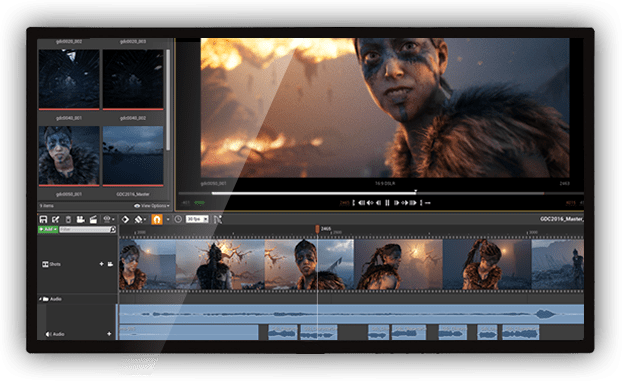
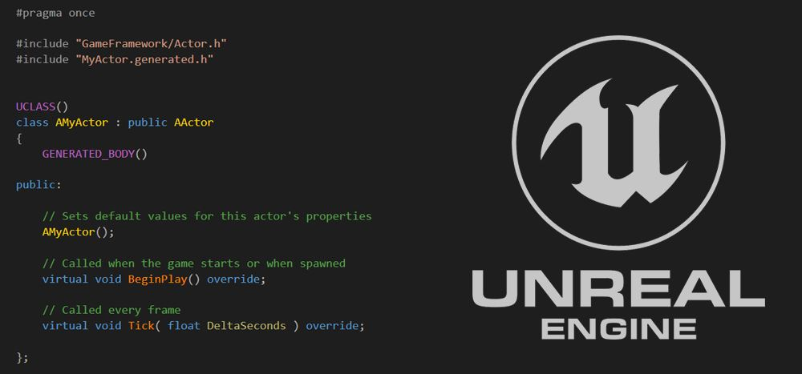
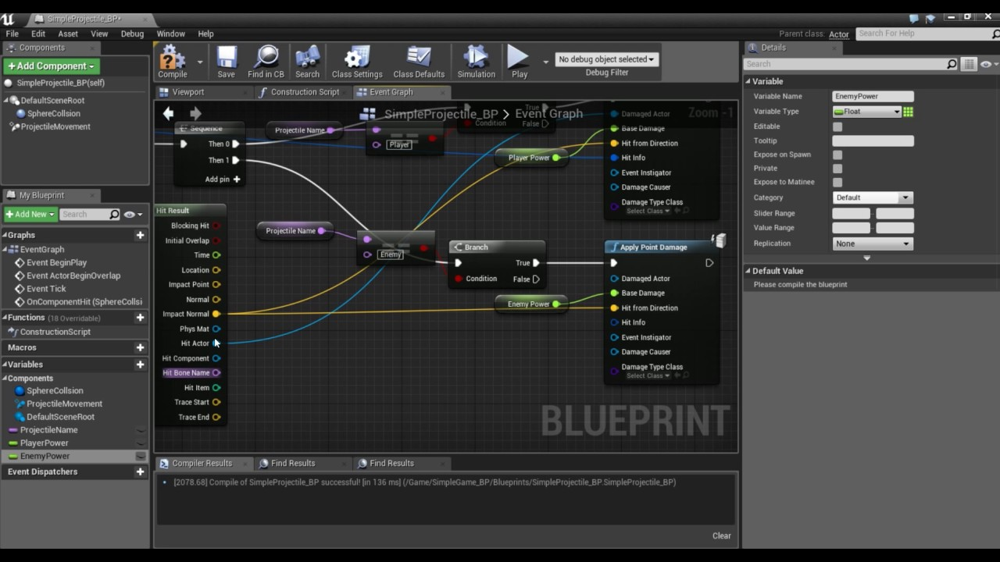
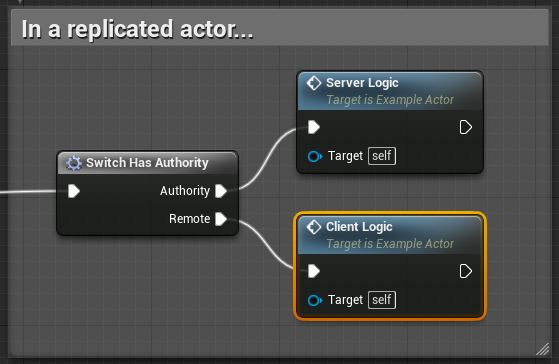

언리얼 엔진의 물리기반 렌더링, 고급 다이내믹 섀도우 옵션, 스크린 스페이스 리플렉션과 라이팅 채널은 정말 장엄한 그래픽의 콘텐츠를 제작할 수 있는 유연성과 효율성을 제공해준다.

풀 C++ 소스 코드 액세스를 통해, 언리얼 엔진 전체를 학습하고, 커스터마이징하고, 디버깅하는 것은 물론 프로젝트 발매까지 막힘 없이 진행할 수 있다.

디자이너 친화적인 블루프린트 비주얼 스크립팅으로, 코드 한 줄 건드리지 않고도 인터랙티브 콘텐츠의 프로토타입 제작과 출시를 빠르게 진행할 수 있다.
블루프린트를 활용하여 오브젝트 작동 및 반응방식 설정, UI 수정, 입력 콘트롤 조정 등 많은 작업들을 할 수 있다.
강력한 내장형 디버거를 활용해 프로젝트를 테스트하면서, 게임플레이의 흐름을 시각화하고 속성을 검사할 수 있다.

언리얼 엔진의 멀티플레이어 프레임워크는 게임 산업에서 가장 우수한 멀티플레이어 경험을 제공하기 위해, 지난 20년이 넘는 세월동안 다양한 플랫폼과 장르의 게임들을 통해 실전 테스트를 받았다.
언리얼 엔진은 어떤 프로젝트의 멀티플레이어 구성요소라도 즉각적인 실행을 할 수 있도록 뛰어난 확장성을 갖추고 검증된 클라이언트/서버 아키텍쳐를 독창적으로 제공한다.